눈의 마을
해가 뜨지 않는 크리스마스 마을. 추운 숲길을 걷다가 수백 개의 불빛을 만나고, 반겨 주는 사람들 사이에서 "여기 내 자리가 있다"고 느끼게 하는 것이 이 마을의 목적입니다.
걸어서 끝에서 끝까지 약 25분 · 가로 2.4km × 세로 1.6km · 산이 뒤를 감싸고 앞은 얼음 바다로 열린 분지
참고한 크리스마스 풍경
실제 크리스마스 사진 46장을 모아 보고, 사진에서 본 것을 마을의 어디에 어떻게 가져올지 정했어요. 사진을 누르면 원본 페이지로 가요.
얼음섬의 작은 수도
- 하얀 교회 정면 앞에 전구를 촘촘히 감은 키 큰 트리 → 종탑 광장의 첫인상
- 바닥에 늘어놓은 촛불 → 자정에 예배당 가는 언덕길
- 푸른 저녁빛 속 창불 켜진 색색의 집 → 등대 항구의 집들


북쪽 끝 숲과 산타의 고향
- 빨간 썰매와 순록, 통나무 오두막 앞 썰매 → 산타 마을 마구간 앞 풍경
- 유리 이글루 위 오로라 → 별빛 언덕의 유리 오두막
- 허스키 개썰매 → 숲길에 개썰매 타기 추가
- 눈이 두껍게 얼어붙은 나무에 주황 조명 → 숲속 등불길의 나무 모습
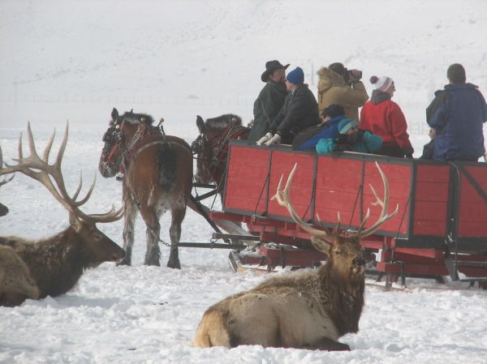

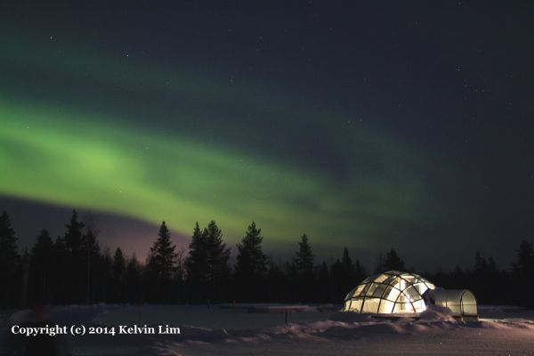
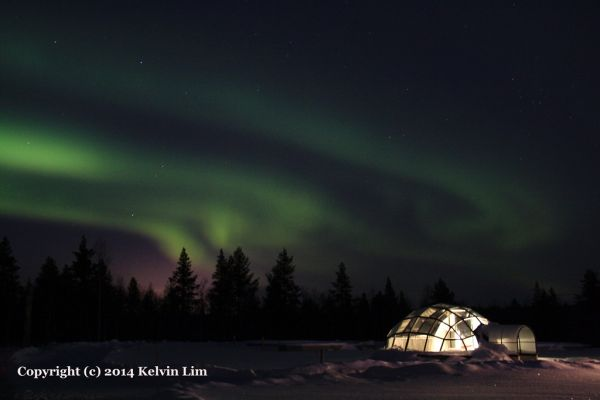


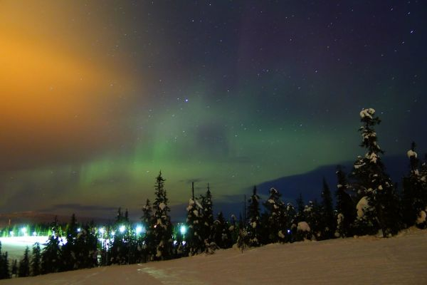
빛나는 대도시의 크리스마스
- 유리 지붕 시장 홀에 매달린 거대한 구슬 → 광장 옆에 「유리 지붕 마켓 홀」 신설
- 대로 위 천사 날개 조명이 겹겹이 → 빛의 대로 아치를 날개 모양으로
- 건물 윤곽을 전구로 두른 백화점, 미니어처 마을 쇼윈도 → 빛의 대로 백화점
- 작은 트리가 줄지어 선 빨간 아케이드 → 대로와 뒷골목을 잇는 지붕 덮인 아케이드 신설
- 별과 혜성 조명 캐노피 → 대로 뒷골목 위

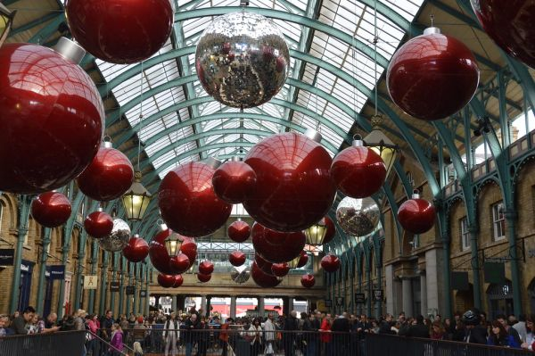
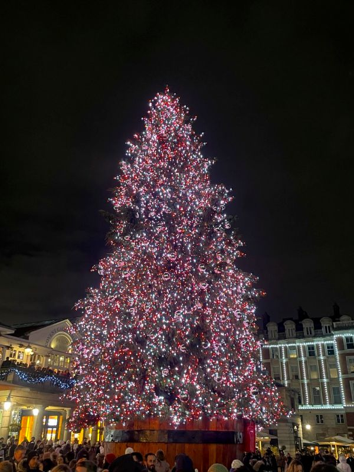


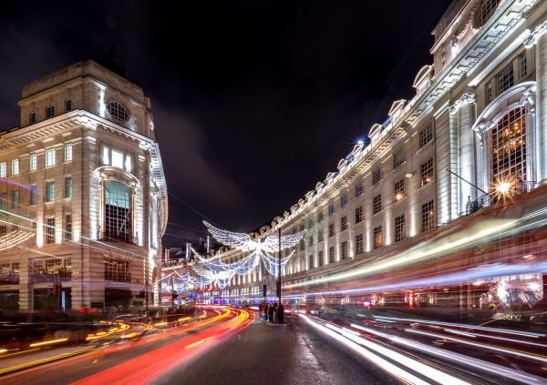


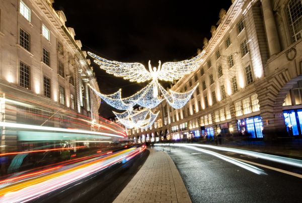

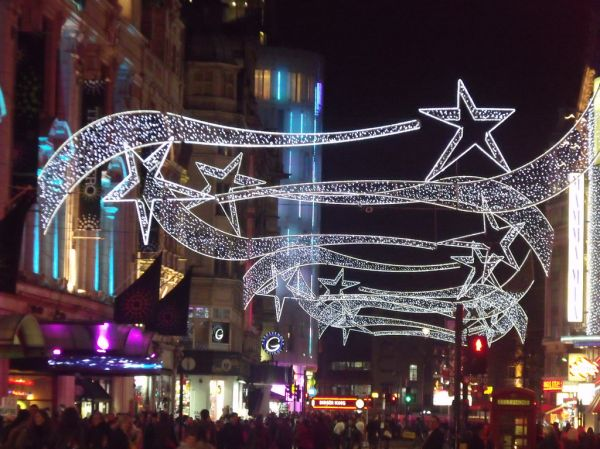
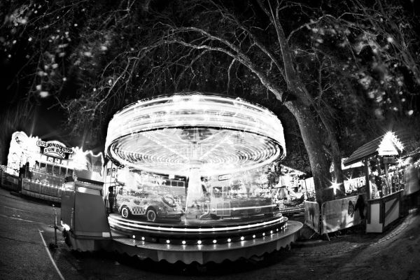
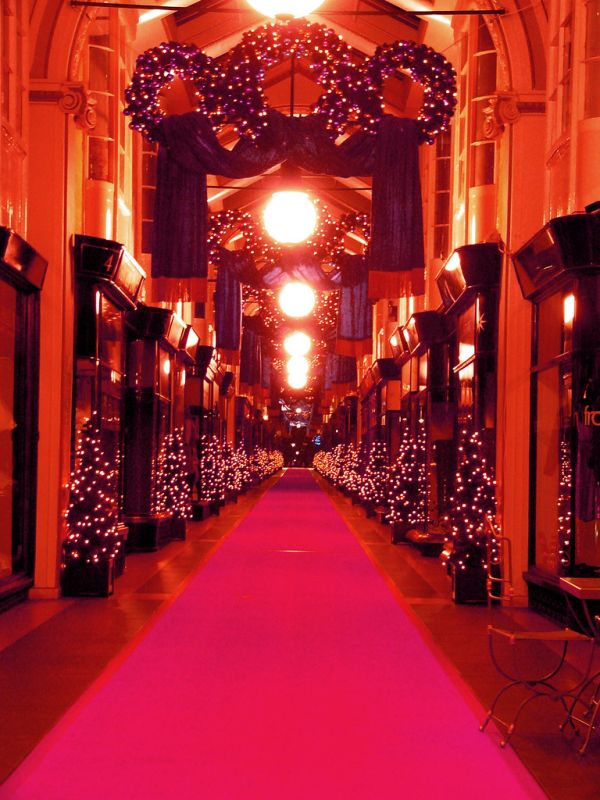
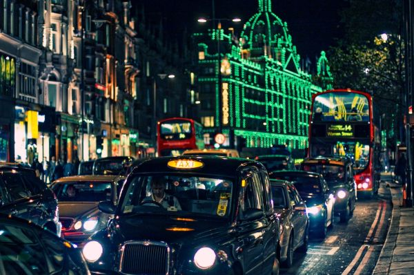
오래된 골목
- 가게마다 리스와 화환, 사람들로 붐비는 좁은 골목 → 등불 골목의 기준
- 위층이 튀어나온 목조 건물 → 등불 골목 건물 형태

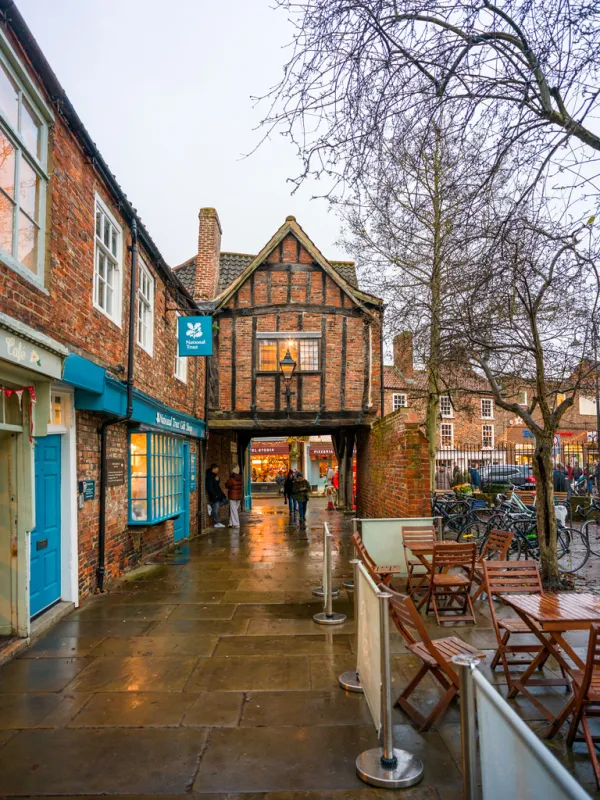
크리스마스 장터
- 첨탑 달린 시청 앞 큰 트리와 오두막 장터 → 종탑 광장 배치
- 빨간 테두리와 눈 쌓인 지붕의 나무 오두막, 지붕 위 리스·인형 장식 → 장터 오두막 디자인
- 광장 위를 덮는 전구 줄 그물 → 광장 하늘
- 꽃상자와 장식으로 덮인 반목조 집, 골목 위 별 장식 → 등불 골목 정면 장식
- 금빛·빨강 구슬, 천사 인형, 호두까기 인형, 생강빵 → 장터 진열품
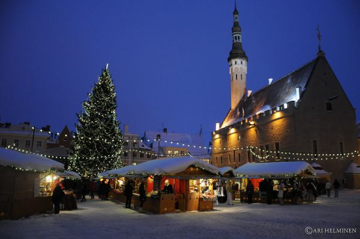
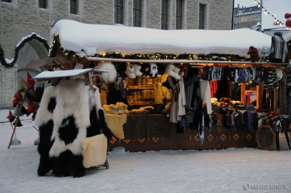
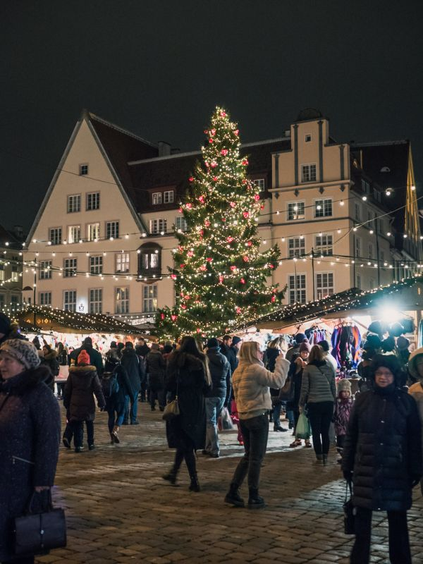
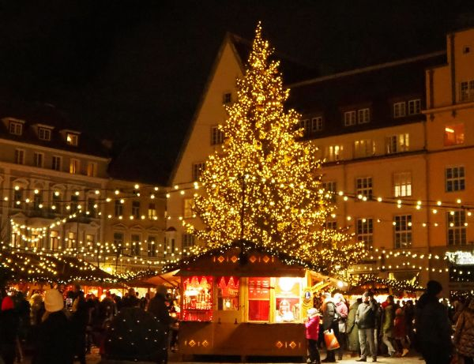


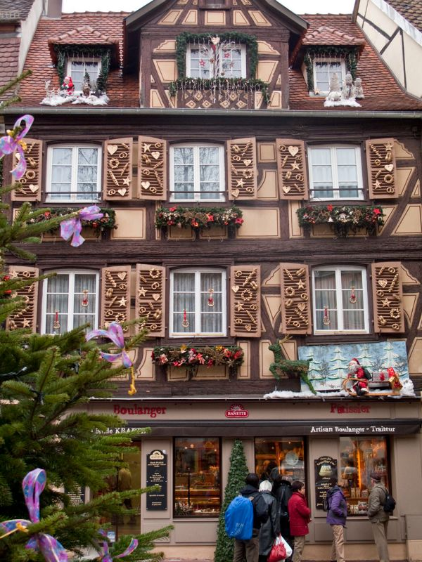
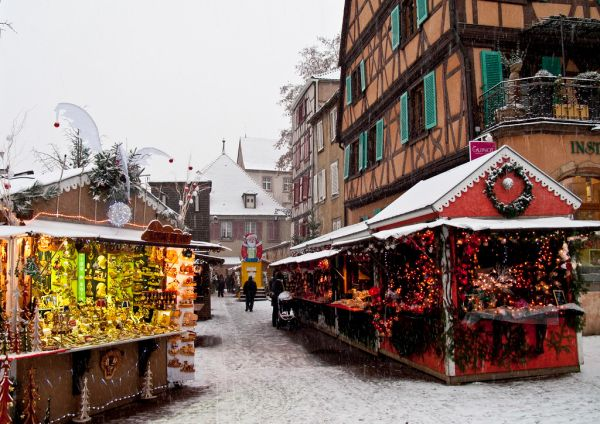


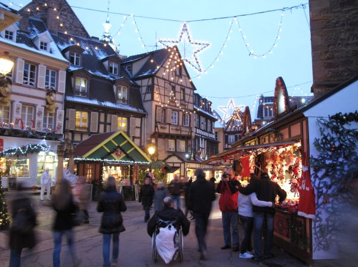


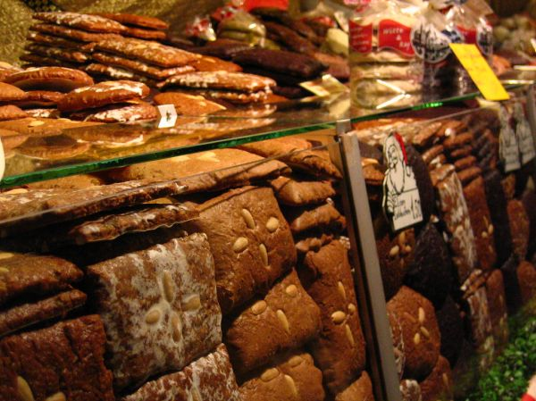
배치 평면도
위가 북쪽, 1칸 = 100m인 실제 축척 평면도예요. 손가락으로 벌리거나 휠을 굴려 확대하면 건물 하나하나와 이름, 가로등, 벤치, 나무까지 보여요. 아래 동네 버튼을 누르면 그곳으로 바로 이동해요.
단면도 A–A′ (북 → 남)
거리 설계 기준
길마다 폭, 건물 높이, 가로등·나무·장식이 놓이는 자리를 정해 두고 그대로 지어요. 아래 그림은 길을 가로로 자른 단면이에요(사람 키 1.74m 기준).
- 차도 8m(썰매·마차), 양쪽 보도 3m, 연석 높이 15cm
- 가스등 높이 4.5m, 20m 간격, 보도 바깥 끝
- 빛 아치: 20m마다 건물 3층 높이(약 9m)에서 길을 가로지름
- 전구 감은 작은 나무: 10m 간격, 가스등 사이
- 1층은 모두 가게 쇼윈도, 위층 창마다 촛대
- 보도 없이 돌바닥 하나, 가운데로 살짝 오목(배수)
- 벽 등불: 높이 3m, 12m 간격, 양쪽 벽에 엇갈려
- 위층이 60cm씩 튀어나옴, 지붕 처마끼리 1m 남짓
- 골목 위를 가로지르는 전구 줄: 6m 간격, 높이 5m
- 문마다 리스, 창틀마다 눈과 촛대
- 가운데 트리 20m, 바닥은 둥근 돌 동심원 무늬
- 장터 오두막: 트리에서 23m 둘레에 3×4m, 지붕 빨강
- 가스등 16개: 광장 가장자리 둘레
- 트리 꼭대기에서 가장자리 가스등까지 전구 줄 16가닥
- 벤치 4개, 모닥불 2곳(지름 1.5m)
- 다져진 눈길, 양옆에 눈둑 높이 60cm
- 나뭇가지에 건 작은 등불: 높이 2.5m, 10m 간격, 한쪽만
- 자작나무와 전나무가 길에서 2m 이상 떨어져 섬
- 200m마다 쉼터(벤치와 등불 기둥)
| 요소 | 규격 | 놓는 자리 |
|---|---|---|
| 가스등 | 높이 4.5m, 주황빛 2,700K | 큰길 20m · 골목 12m 간격, 교차로 네 귀퉁이에 꼭 |
| 벽 등불 | 높이 3m, 작은 유리 상자 | 골목 양쪽 벽에 엇갈려, 문 옆에는 반드시 하나 |
| 전구 줄 | 따뜻한 흰색 위주, 빨강·초록은 광장만 | 골목 위 6m · 큰길은 빛 아치 20m · 처마 끝 한 줄 |
| 크리스마스 트리 | 광장 20m · 골목 작은 광장 4m · 집 앞 1.5m | 광장 가운데, 골목 광장 가운데, 가게 문 양옆 화분 |
| 리스 | 지름 50cm, 빨간 리본 | 모든 현관문 가운데 높이 1.6m |
| 벤치 | 길이 1.7m, 위에 눈 | 30걸음(약 25m)마다 하나, 가로등 밑 |
| 바닥 | 큰길·광장 둥근 돌, 골목 납작 돌, 숲길 다진 눈 | 사람이 다닌 가운데는 눈이 녹아 돌이 비침, 가장자리는 눈둑 |
| 집 뒤 마당 | 작은 전나무, 장작 헛간, 눈사람, 낮은 나무 울타리 | 블록 안쪽을 비우지 않고 채움 |
| 창문 | 높이 1.4~1.8m, 흰 창틀 | 창 안쪽은 늘 불이 켜져 있고, 셋 중 하나에 촛대나 별 장식 |
이 마을의 약속
- 서두를 일이 없다시간 제한도, 실패도, 점수도 없어요. 멈춰 서 있는 것도 놀이예요.
- 어디서나 앉을 수 있다벤치, 창가 자리, 모닥불 곁, 부두 끝, 리프트 의자. 쉬는 자리가 30걸음마다 하나.
- 혼자여도 외롭지 않다늘 누군가의 목소리, 불 켜진 창, 지나가는 사람과 동물이 있어요.
- 나를 기억한다두 번째 만나면 이름을 부르고, 내가 준 선물 이야기를 해요.
- 내가 줄 수 있다받기만 하지 않아요. 장터에서 산 것으로 누군가를 기쁘게 할 수 있어요.
- 불은 꺼지지 않는다가로등, 창불, 전구, 트리. 이 마을의 조명은 언제나 켜져 있어요.
꼭 들어가는 것
동네별 설계
숲속 등불길
내 발자국 소리와 눈 내리는 소리만 들리는 숲길로 시작해요. 나무에 걸린 작은 등불이 10m마다 길을 알려 주고, 하늘에는 오로라가 희미하게 흘러요.
- 모퉁이를 돌면 숲이 열리고 언덕 아래로 마을 전체 불빛이 한꺼번에 보여요.
- 그 순간 순록 썰매 한 대가 방울 소리를 내며 마을 위를 가로질러 날아가요.
- 입구 다리에서 등불 할머니가 핫초코와 내 오두막 열쇠를 건네요.
추웠다가, 따뜻해지는 첫 5분.
종탑 광장 · 큰 마켓
가운데 20m 전나무 트리. 장식은 금색과 빨간색만 써서 촌스럽지 않게 해요. 둘레에 빨간 지붕 장터 오두막 12채와 천천히 도는 회전목마, 4층 높이 종탑이 있어요.
- 장터: 구운 아몬드, 생강빵, 털장갑, 나무 장난감, 촛불, 유리 장식, 따뜻한 음료, 선물 포장.
- 트리 아래 모닥불 두 곳과 둘러앉는 통나무 의자.
- 장난감처럼 밝은 동화 색감: 빨강·흰 줄무늬 차양, 사탕 지팡이 가로등, 선물상자 모양 가판대.
사람들 웃음소리 속에 서 있는 것만으로 좋은 곳.
등불 골목
위층이 앞으로 튀어나와 맞은편 집과 거의 닿을 듯한 좁은 목조 골목이에요. 가스등이 주황빛으로 비추고, 창틀마다 눈과 성에, 촛대가 놓여 있어요.
- 서점(문 열면 종이 딸랑), 찻집(김 서린 창 너머 웃음소리), 오르골 가게, 빵집.
- 골목 끝 작은 광장에서 캐럴 합창단이 노래해요.
- 소리가 벽에 울려서 더 가깝고 포근하게 들려요.
어깨를 움츠리고 걷다가 찻집 문을 열고 싶어지는 길.
빛의 대로
광장에서 스키 산 쪽으로 350m 뻗은 큰길이에요. 가운데 차도 8m(썰매와 마차가 다님), 양옆 보도 3m. 4~5층 석조 건물이 벽을 맞대고 줄지어 서 있고, 1층은 전부 불 켜진 가게예요.
- 머리 위로 20m마다 천사 날개 모양 조명이 길을 가로질러 겹겹이 걸려 있어서, 걸으면 빛 터널 속을 걷는 느낌이에요.
- 광장 쪽 입구에 유리 지붕 마켓 홀: 천장에 사람 키만 한 빨강·은색 구슬이 매달려 있어요.
- 대로 중간에서 뒷골목으로 빠지는 빨간 아케이드: 지붕 덮인 통로 양옆에 작은 트리가 줄지어 서 있어요.
- 백화점은 건물 윤곽 전체를 전구로 두르고, 쇼윈도에는 움직이는 미니어처 마을이 있어요.
- 보도 가장자리 10m마다 전구를 감은 작은 나무, 20m마다 가스등.
- 백화점 쇼윈도(움직이는 인형 장식), 극장, 여관, 장난감 가게, 모자 가게, 초콜릿 가게.
- 대로 뒤로 뒷골목 두 줄과 이어 주는 좁은 골목 두 개.
고개를 들면 빛이 쏟아지는 길.
겨울 놀이공원
빛의 대로 끝에서 남쪽으로 펼쳐진, 마을에서 가장 크고 들뜬 곳이에요. 정문 세 곳(빛의 대로·호숫가 동네·항구 쪽)이 있고, 공원 둘레를 꼬마 기차가 돌아요. 지름 60m 대관람차가 마을에서 가장 높은 불빛이에요.
- 정문에서 가운데 광장까지 전구 터널.
- 가운데 푸드코트 광장: 트리와 테이블, 간식 오두막 14채(츄러스·군고구마·코코아·솜사탕·와플).
- 대관람차, 산타 썰매 모양 열차가 달리는 눈썰매 롤러코스터, 순록·북극곰 목마가 있는 2층 회전목마, 회전 그네, 범퍼카 홀, 얼음 미끄럼탑.
- 가운데에 과자로 지은 집이 있는 생강빵 집 미로.
- 야외 무대와 관람석: 합창단 공연, 자정 카운트다운.
- 입구의 풍선 파는 북극곰, 놀이기구 줄에 선 사람들.
어린 시절 축제 밤의 설렘.
등대 항구
부두를 따라 색색의 함석집, 눈 덮인 고깃배, 깜빡이는 등대가 있어요. 부두 끝 노천 온천에 들어가면 눈송이가 김 속으로 녹아 사라져요.
- 크리스마스이브에 책을 선물하는 풍습을 가진 책방. 한 권 골라 내 오두막 책장에 꽂아요.
- 생선 가게에서 산 생선은 북극곰 친구에게 줄 수 있어요.
따뜻한 물속에서 오로라를 올려다보는 밤.
산타 마을
자작나무 숲 가장자리의 통나무 마을이에요. 선물 공장, 산타 우체국, 순록 마구간, 그리고 자정에 썰매들이 날아오르는 220m 활주로가 있어요.
- 편지를 써서 우체통에 넣으면 며칠 뒤 내 오두막 우편함에 답장이 와요.
- 공장 창 너머로 장난감 만드는 모습이 보여요.
- 순록 먹이 주기, 순록 썰매로 숲길 일주(약 1.2km).
어릴 때 믿었던 이야기가 정말로 있는 곳.
북극곰 주민
북극곰은 따로 떨어진 구역에 사는 게 아니라 사람들과 섞여 사는 마을 주민이에요. 말을 걸면 대답하고, 각자 맡은 일이 있어요.
- 광장 장터의 코코아 장수 곰, 호수의 스케이트 강사 곰, 산타 공장의 선물 포장 곰.
- 부두 끝에서 낚시하는 곰, 놀이공원 입구에서 풍선 파는 곰, 빵집 골목 모퉁이에서 군밤 굽는 곰.
- 공원에서 눈사람을 만드는 아기곰들, 눈썰매 언덕의 곰 형제.
크고 하얗고 다정한 이웃들.
스키 산
마을 뒤 산에 조명이 켜진 슬로프 세 개(완만·보통·숲길)와 리프트가 있어요. 정상에서는 오로라가 머리 위로 지나가고, 내려올 때는 마을 불빛을 향해 미끄러져요.
- 정상의 작은 산장에서 쉬어 갈 수 있어요.
- 슬로프 아래 아이들 눈썰매 언덕.
차가운 바람을 가르고 불빛 속으로 들어가는 기분.
별빛 언덕
지그재그 숲길 끝에 유리 지붕 오두막 몇 채와 큰 모닥불이 있어요. 마을 전체 불빛이 발아래 펼쳐지고, 자정에는 산타들이 날아가는 모습이 가장 잘 보여요.
- 소원 등불에 소원을 적어 띄우면 다른 등불들 사이로 천천히 올라가요.
- 유리 오두막 침대에 누워 오로라를 볼 수 있어요.
아무 말 없이 오래 머물게 되는 곳.
얼음 호수와 예배당
가장자리에 전구가 둘린 얼음 호수에서 사람들이 손잡고 천천히 스케이트를 타요. 호숫가 언덕 위 작은 예배당은 촛불만 켜져 있고, 들어가면 바깥 소리가 사라지고 '고요한 밤'만 들려요.
아무것도 하지 않아도 괜찮다고 말해 주는 곳.
내 오두막
벽난로, 흔들의자, 창가 자리, 그리고 고양이 한 마리가 있어요. 어디서 놀다 와도 문을 열면 벽난로가 타고 있어요.
- 장터에서 산 장식으로 내 트리를 꾸며요.
- 책방에서 고른 책, 산타의 답장, 주민들의 선물이 하나씩 쌓여요.
- 자정 비행이 끝난 다음 날, 트리 밑에 작은 선물이 놓여 있어요.
이 마을에 내 자리가 있다는 증거.
하늘의 흐름
해가 뜨지 않아요. 실제 약 20분에 한 바퀴씩 하늘이 천천히 바뀌고, 조명은 언제나 켜져 있어요.
자정 — 산타들의 출발
꼬마 산타와 충분히 친해지면, 어느 자정에 "오늘은 같이 가자"며 썰매 한 자리를 내줘요. 산타들과 나란히 마을 위를 날아오르게 돼요.
주민들
입구 다리에서 매일 등불을 켜요. 처음 온 나에게 핫초코와 열쇠를 줘요.
아직 견습생. 마을 안내를 맡았고, 언젠가 나를 썰매에 태워 주고 싶어 해요.
우체국 난로 옆에서 늘 꾸벅꾸벅. 편지 답장은 꼭 직접 써요.
순록 여섯 마리의 이름과 성격을 다 알아요. 먹이 주는 법을 알려 줘요.
혼자 장갑을 떠요. 실을 사다 주면 내 장갑을 떠 줘요.
매일 같은 벤치에서 누군가를 기다려요. 이야기를 들어 주면 조금씩 사연을 털어놔요.
북극곰 가족의 오랜 친구. 생선을 나눠 주고 곰들 이름을 알려 줘요.
골목 캐럴을 이끌어요. 함께 서면 나도 한 소절 부를 수 있어요.
내게 어울리는 책을 골라 줘요. 다음에 오면 그 책 어땠냐고 물어봐요.
거리에는 장 보는 가족, 팔짱 낀 연인, 눈싸움하는 아이들, 개 산책하는 사람들이 늘 오가요. 주민들은 시간에 따라 장터, 창가, 활주로로 자리를 옮겨요.
디테일 원칙
- 실제 크기문 높이 2m, 층 높이 2.8~3m, 골목 폭 3~5m, 사람 키 174cm 기준.
- 눈이 있어야 할 곳에 다지붕, 창틀, 가로등 위, 벤치, 울타리 기둥 위. 처마에는 고드름. 다닌 길은 눈이 다져져 돌바닥이 비쳐요.
- 빛은 두 가지 색푸른 눈빛과 주황빛 창불. 형광색 전구는 쓰지 않아요.
- 추운 공기가 보이게사람과 순록의 입김, 굴뚝 연기, 온천과 찻집 김.
- 소리는 장소마다골목은 울리고, 호수는 넓고, 예배당은 고요해요. 실제 녹음과 자연스러운 소리만 써요.
- 모든 문은 열린다들어가면 그 집에 맞는 실내가 있어요.
만드는 순서
- 첫 장면과 마을의 심장. 숲속 등불길 → 언덕 위에서 마을 불빛이 펼쳐지는 순간 → 입구 다리 → 종탑 광장과 큰 마켓. 처음 10분이 마음을 움직이는지부터 맞춰요.
- 산타 마을과 순록. 산타들, 마구간, 우체국, 순록 썰매 숲길.
- 빛의 대로와 겨울 놀이공원. 빛 아치, 쇼윈도, 대관람차, 북극곰 주민들.
- 하늘. 스키 산, 하늘 썰매, 별빛 언덕의 오로라, 자정 산타 출발.
- 나머지 동네. 등불 골목, 등대 항구, 얼음 호수와 예배당, 내 오두막.
- 살아 있는 마을. 주민들의 사연과 하루 일과, 거리의 사람들, 장소별 소리와 음악.
단계마다 보여드리고, 마음에 안 드는 부분은 그 자리에서 고친 뒤 다음으로 넘어가요.